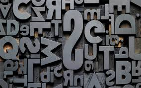
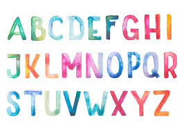

Шрифт
Шрифт (нім., від писати):
- 1. Повний комплект друкарських літер певного типу й малюнка, необхідний для набору якого-небудь тексту;
сукупність металевих рельєфних літер, цифр, розділових знаків у друкарській машинці. - 2. Графічна форма літер при писанні, характер малюнка написаних літер.
Шрифт - це набір символів, зазвичай літери, цифри, знаки пунктуації та інші символи.
Шрифти характеризуються своїм розміром, вагою і стилем.
Шрифти можуть бути більші, ніж інші, або вони можуть бути більш жирними або курсивом.
Всі ці характеристики застосовні до шрифтів, які ми використовуємо сьогодні, за винятком того,
що ми зараз зазвичай використовуємо і бачимо шрифти, які відображаються на екранах усіх видів.
У той же час ми все менше покладаємося на папір і аналогічні матеріали.
Шрифти, які використовуються на комп'ютерах, в веб-браузерах, в офісних додатках або будь-яких інших додатках,
як і раніше визначаються тими ж характеристиками: розміром, вагою і стилем.

Дивіться також:
-
Адитип: фотонабірна машина з ручною установкою шрифтового шаблону і механічним переміщенням фотоматеріалу.
Застосовується в картографії. -
Гарнітура: повний комплект друкарських шрифтів різних накреслень і кеглів, але однакового за характером малюнка.
-
Дублікат: 1. Другий примірник документа, що має таку саму юридичну силу, як і оригінал.
2. У залізничних перевезеннях документ, що видається разом з накладною як посвідчення про прийняття вантажу для перевезення.
3. Копія частин рукопису (заголовків, таблиць, формул, виносок тощо), які набирають іншим шрифтом або способом, ніж основний текст.